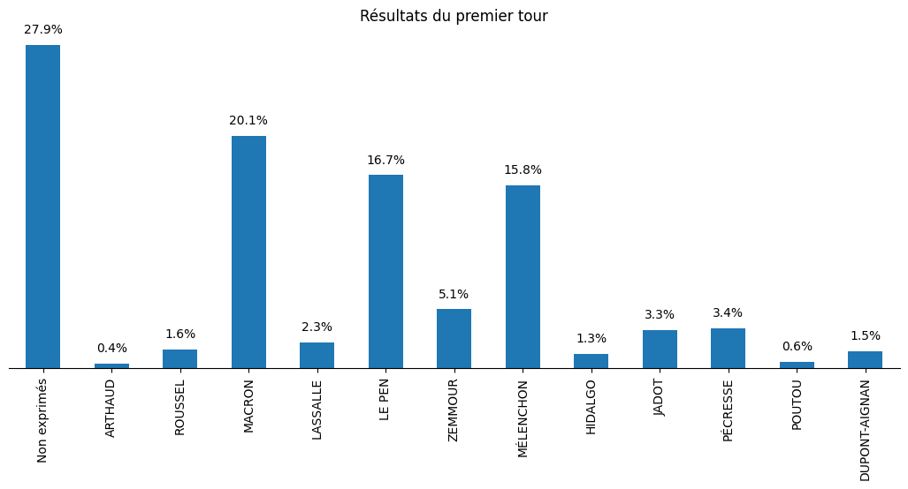
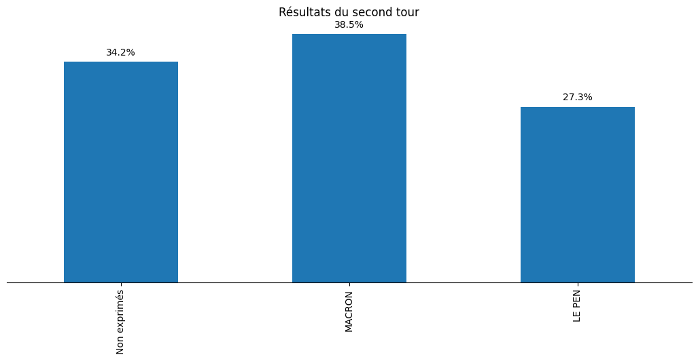

Estimer le report des voix aux présidentielles
Cet article fait suite au travail de Laurent Perrinet sur les reports de voix entre le premier et le deuxième tour des élections présidentielles en 2022. La démarche de ce travail est intéressante (et autant que je sache originale) : elle consiste à prendre les résultats des élections au niveau des bureaux de vote aux deux tours, et essayer d'estimer la probabilité que quelqu'un ayant voté pour X (par exemple Fabien Roussel) vote pour Y (par exemple Marine Le Pen) au second tour.
Le modèle utilisé est déterministe. Il suppose les résultats des premier et second tour connus et cherche à estimer la valeurs des éléments d'une matrice \(M\) de transition:
\begin{align*} M_{i} &= \operatorname{Softmax}\left(\tilde{M}_{i}\right) \qquad \forall i = 1 \dots N_1\; \text{lignes}\\ p_2 &= p_1\,M\\ \end{align*}où la somme des éléments de chaque ligne de la matrice \(M\) est contrainte et égale à 1; En réalité on cherche la valeur des élements de la matrice non constrainte \(\tilde{M}\) en utilisant un algorithme d'optimisation. L'expression du modèle ainsi que les résultats de l'article sus-cités suggèrent plusieurs pistes d'amélioration :
- Lorsqu'on le verra plus loin, les distributions marginales \(P\left(Y_2 | X_1\right)\) sont très étalées. Or le modèle n'est pas probabiliste et ne retourne qu'une seule valeur; Un modèle bayésien correctement calibré permettrait a priori de rendre compte de l'étalement de ces distributions;
- L'hypothèse d'une matrice unique pour tout le territoire est peut-être suffisante, mais elle est osée. On pourrait envisager un modèle hiérarchique, où l'on apprend une matrice par territoire mais ou une certaine information est partagée entre les territoires.
- À l'échelle nationale, les sondages de sortie d'urne peuvent servir à informer les distributions a priori des probabilités de transition.
On se placera ici à l'échelle de la circonscription législative. Le découpage à l'échelle du bureau de vote est intéressant, mais le but implicite de cette étude est de donner une idée des reports de voix pour le second tour des législatives 2022 (et permet d'itérer rapidement sur un modèle de taille raisonnable). J'utilise ici le code de Laurent Perrinet en le modifiant (les erreurs éventuelles sont de mon fait).
import os import numpy as np import pandas as pd
TODO Refactor the code a little bit
TODO No one cares about the data downloading, hide
TODO Factor the plotting code into functions
TODO Factor the sampling code into functions
Les données
Les résultats des élections présidentielles 2022 sont publiquement disponibles à l'échelle des circonscriptions législatives sous format xlsx. On utilise la librairies python pandas pour les manipuler et convertir dans le format approprié pour le modèle.
Premier tour
fname = '/tmp/T1.xlsx' if not os.path.isfile(fname): url = "https://www.data.gouv.fr/fr/datasets/r/1a35594a-99f2-4257-87e0-ec2f55039276" import urllib.request urllib.request.urlretrieve(url, fname) T1 = pd.read_excel(fname)
On vérifie que les données ont été bien téléchargées et converties:
T1.tail()
On regroupe les abstentions, votes blancs et nuls sous la catégorie des votes non-exprimés, et on formatte le nom des circonscriptions
df_1 = T1[['Nuls', 'Blancs', 'Abstentions']].copy() df_1["Non exprimés"] = df_1['Nuls'] + df_1['Blancs'] + df_1['Abstentions'] df_1 = df_1[["Non exprimés"]].copy() T1['Code de la circonscription'] = T1['Code de la circonscription'].apply(str) circonscriptions = T1['Code du département'] + T1['Code de la circonscription'] df_1.head()
Et on réccupère maintenant les votes par candidat:
col_start = 21 col_par_cdt = 7 candidats = T1.iloc[0][col_start::col_par_cdt] for i_candidat, candidat in enumerate(candidats): i_col = col_start + i_candidat*col_par_cdt + 2 df_1[candidat] = T1.iloc[:, i_col].values
On peut maintenant regarder la distribution des votes au premier tour:
import matplotlib.pyplot as plt results = df_1.sum()/df_1.sum().sum() fig, ax = plt.subplots(figsize=(13, 5)) ax = results.plot.bar(ax=ax) ax.set_yticks([]) spines_to_remove = ["top", "left", "right"] for spine in spines_to_remove: ax.spines[spine].set_visible(False) for i, val in enumerate(list(results.values)): plt.text(i, val + 0.01, f"{val*100:.01f}%", ha="center") plt.title("Résultats du premier tour") plt.savefig(filename, bbox_inches="tight") filename
#+attrhtml :width 100%

Deuxième tour
Le processus de récupération des données est identique pour le second tour :
fname = '/tmp/T2.xlsx' if not os.path.isfile(fname): url = "https://www.data.gouv.fr/fr/datasets/r/5eacdbc7-b1a2-440c-8eef-09c8bfb87609" import urllib.request urllib.request.urlretrieve(url, fname) T2 = pd.read_excel(fname) df_2 = T2[['Nuls', 'Blancs', 'Abstentions']].copy() df_2["Non exprimés"] = df_2['Nuls'] + df_2['Blancs'] + df_2['Abstentions'] df_2 = df_2[["Non exprimés"]].copy() col_start = 21 col_par_cdt = 7 candidats = T2.iloc[0][col_start::col_par_cdt] for i_candidat, candidat in enumerate(candidats): i_col = col_start + i_candidat*col_par_cdt + 2 print('# colonne', i_col, ' résultats=', T2.iloc[:, i_col].values) df_2[candidat] = T2.iloc[:, i_col].values
import matplotlib.pyplot as plt results = df_2.sum()/df_2.sum().sum() fig, ax = plt.subplots(figsize=(13, 5)) ax = results.plot.bar(ax=ax) ax.set_yticks([]) spines_to_remove = ["top", "left", "right"] for spine in spines_to_remove: ax.spines[spine].set_visible(False) for i, val in enumerate(list(results.values)): plt.text(i, val + 0.01, f"{val*100:.01f}%", ha="center") plt.title("Résultats du second tour") plt.savefig(filename, bbox_inches="tight") filename
#+attrhtml :width 100%

Second order
import seaborn as sns CDT_1 = "ARTHAUD" CDT_2 = "LE PEN" df_12 = pd.DataFrame() df_12[CDT_1] = df_1[CDT_1].copy() df_12[CDT_2] = df_2[CDT_2].copy() df_12[CDT_1] = df_12[CDT_1]/df_1.sum(axis=1) df_12[CDT_2] = df_12[CDT_2]/df_2.sum(axis=1) fig = plt.figure() sns.jointplot(x=df_12[CDT_1], y=df_12[CDT_2], xlim=(0, 0.02), ylim=(0, 1), kind='hist', height=8); plt.savefig(filename) filename

import seaborn as sns CDT_1 = "ARTHAUD" CDT_2 = "Non exprimés" df_12 = pd.DataFrame() df_12[CDT_1] = df_1[CDT_1].copy() df_12[CDT_2] = df_2[CDT_2].copy() df_12[CDT_1] = df_12[CDT_1]/df_1.sum(axis=1) df_12[CDT_2] = df_12[CDT_2]/df_2.sum(axis=1) fig = plt.figure() sns.jointplot(x=df_12[CDT_1], y=df_12[CDT_2], xlim=(0,0.02), ylim=(0, 1), kind='hist', height=8); plt.savefig(filename) filename

import seaborn as sns CDT_1 = "Non exprimés" CDT_2 = "MACRON" df_12 = pd.DataFrame() df_12[CDT_1] = df_1[CDT_1].copy() df_12[CDT_2] = df_2[CDT_2].copy() df_12[CDT_1] = df_12[CDT_1]/df_1.sum(axis=1) df_12[CDT_2] = df_12[CDT_2]/df_2.sum(axis=1) fig = plt.figure() sns.jointplot(x=df_12[CDT_1], y=df_12[CDT_2], xlim=(0, 1), ylim=(0, 1), kind='hist', height=8); plt.savefig(filename) filename

Simple modèle écologique
second = df_2[1:].values[:577, :] premier = df_1[1:].values[:577:] n_premier = premier.shape[1] n_second = second.shape[1] n_circos = premier.shape[0]
The model we implement is taken from this paper. We will be using aesara for modelling and blackjax for sampling.
TODO Full mixing
import aesara.tensor as at from aesara.tensor.random import RandomStream srng = RandomStream(0) p1_at = at.as_tensor(premier / premier.sum(axis=1).reshape((premier.shape[0], 1))) beta_rv = srng.dirichlet(at.ones((n_premier, n_second))) p2_at = at.dot(p1_at, beta_rv) p2_at_norm = p2_at / p2_at.sum(axis=1).reshape((p2_at.shape[0], 1)) R2_rv = srng.multinomial(at.sum(second, axis=1), p2_at)
from aesara.link.jax.dispatch import jax_funcify from aesara.graph.fg import FunctionGraph from aeppl.opt import logprob_rewrites_db from aesara.compile import mode from aesara.raise_op import CheckAndRaise @jax_funcify.register(CheckAndRaise) def jax_funcify_Assert(op, **kwargs): # Jax does not allow assert whose values aren't known during JIT compilation # within it's JIT-ed code. Hence we need to make a simple pass through # version of the Assert Op. # https://github.com/google/jax/issues/2273#issuecomment-589098722 def assert_fn(value, *inps): return value return assert_fn fgraph = FunctionGraph(inputs=(beta_vv, R2_vv), outputs=(logprob,)) mode.JAX.optimizer.optimize(fgraph) jax_fn = jax_funcify(fgraph)
M = SimplexTransform().forward(beta_rv).eval() print(jax_fn(M, second)[0])
def logpdf(beta): return jax_fn(beta, second)[0]
import jax import blackjax def inference_loop(rng_key, kernel, initial_state, num_samples): """Sequantially draws samples given the kernel of choice.""" def one_step(state, rng_key): state, _ = kernel(rng_key, state) return state, state keys = jax.random.split(rng_key, num_samples) _, states = jax.lax.scan(one_step, initial_state, keys) return states rng = jax.random.PRNGKey(0) adapt = blackjax.window_adaptation(blackjax.nuts, logpdf, 3000, initial_step_size=1., target_acceptance_rate=0.8) state, kernel, _ = adapt.run(rng, M) samples = inference_loop(rng, kernel, state, 1000)
trans_at = at.matrix() untrans_at = SimplexTransform().backward(trans_at) fgraph = FunctionGraph(inputs=(trans_at,), outputs=(untrans_at,)) mode.JAX.optimizer.optimize(fgraph) untransform_fn = jax_funcify(fgraph)
a = jax.vmap(untransform_fn, in_axes=(0))(samples.position)[0]
jnp.mean(a, axis=0)
jnp.std(a, axis=0)
On vérifie que le modèle, aussi surprenant que cela soit, est k
a[:, 1, 2][:100]
TODO Hyperprior on dirichlet
Per the paper on ecological inference we add an exponential hyperprior on the dirichlet distribution.
second = df_2[1:].values[:100,:] premier = df_1[1:].values[:100,:] n_premier = premier.shape[1] n_second = second.shape[1] n_circos = premier.shape[0]
import aesara.tensor as at from aesara.tensor.random import RandomStream srng = RandomStream(0) p1_at = at.as_tensor(premier / premier.sum(axis=1).reshape((premier.shape[0], 1))) delta_rv = srng.exponential(at.ones((n_premier, n_second)) * 10.) beta_rv = srng.dirichlet(delta_rv) p2_at = at.dot(p1_at, beta_rv) p2_at_norm = p2_at / p2_at.sum(axis=1).reshape((p2_at.shape[0], 1)) R2_rv = srng.multinomial(at.sum(second, axis=1), p2_at)
from aeppl.transforms import TransformValuesOpt, LogTransform, SimplexTransform R2_vv = R2_rv.clone() beta_vv = beta_rv.clone() delta_vv = delta_rv.clone() transforms_op = TransformValuesOpt( {beta_vv: SimplexTransform(), delta_vv: LogTransform()} ) logprob = joint_logprob( {R2_rv: R2_vv, beta_rv: beta_vv, delta_rv: delta_vv}, extra_rewrites=transforms_op ) # Compile the logprob function logprob_fn = aesara.function((beta_vv, delta_vv, R2_vv), logprob)
beta = SimplexTransform().forward(beta_rv).eval() delta = LogTransform().forward(delta_rv).eval() print(logprob_fn(beta, delta, second))
from aesara.link.jax.dispatch import jax_funcify from aesara.graph.fg import FunctionGraph from aeppl.opt import logprob_rewrites_db from aesara.compile import mode from aesara.raise_op import CheckAndRaise @jax_funcify.register(CheckAndRaise) def jax_funcify_Assert(op, **kwargs): # Jax does not allow assert whose values aren't known during JIT compilation # within it's JIT-ed code. Hence we need to make a simple pass through # version of the Assert Op. # https://github.com/google/jax/issues/2273#issuecomment-589098722 def assert_fn(value, *inps): return value return assert_fn fgraph = FunctionGraph(inputs=(beta_vv, delta_vv, R2_vv), outputs=(logprob,)) mode.JAX.optimizer.optimize(fgraph) jax_fn = jax_funcify(fgraph)
M = SimplexTransform().forward(beta_rv).eval() d = LogTransform().forward(delta_rv).eval() print(jax_fn(M, d, second)[0])
def logpdf(x): beta, delta = x return jax_fn(beta, delta, second)[0]
import jax import blackjax def inference_loop(rng_key, kernel, initial_state, num_samples): """Sequantially draws samples given the kernel of choice.""" def one_step(state, rng_key): state, _ = kernel(rng_key, state) return state, state keys = jax.random.split(rng_key, num_samples) _, states = jax.lax.scan(one_step, initial_state, keys) return states rng = jax.random.PRNGKey(0) adapt = blackjax.window_adaptation(blackjax.nuts, logpdf, 3000, initial_step_size=1., target_acceptance_rate=0.8) state, kernel, _ = adapt.run(rng, (M, d)) samples = inference_loop(rng, kernel, state, 1000)
trans_at = at.matrix() untrans_at = LogTransform().backward(trans_at) fgraph = FunctionGraph(inputs=(trans_at,), outputs=(untrans_at,)) mode.JAX.optimizer.optimize(fgraph) untransform_fn = jax_funcify(fgraph)
a = jax.vmap(untransform_fn, in_axes=(0))(samples.position[1])[0]
jnp.mean(a, axis=0)
jnp.std(a, axis=0)
Les résultats sont de toute évidence faux: il suffit de comparer les graphes avec les statistiques de second ordre plus haut et les valeurs que l'on obtient pour les priors des distributions des lignes de la matrice de transition. Pour comprendre ce qui se passe il va falloir retourner au tableau, et notamment regarder les prior predictive distributions pour les matrices de transition et voir si elles permettent de retrouver les courbes X au premier tour vs Y au second tour. Trois hypothèses:
- La paramétrisation du modèle est mauvaise;
- L'impact des variations de la logprob correspondants aux petit candidats est tellement faible que le modèle est surtout déterminé par la valeur a priori. On peut alors soit prendre un sondage pour les valeurs a priori, soit les "fabriquer".
- Le modèle hiérarchique est nécessaire. Un moyen de voir si cela va changer quelque chose est de fitter ce modèle sur une seule circonscription.
TODO Explain why we get weird results with full mixing
TODO Hierarchical model
The hierarchical model should allow us to give more reasonable national estimates. It is not purely descriptive as this gives us access to a quantity we did not have access to before: the transition matrices.